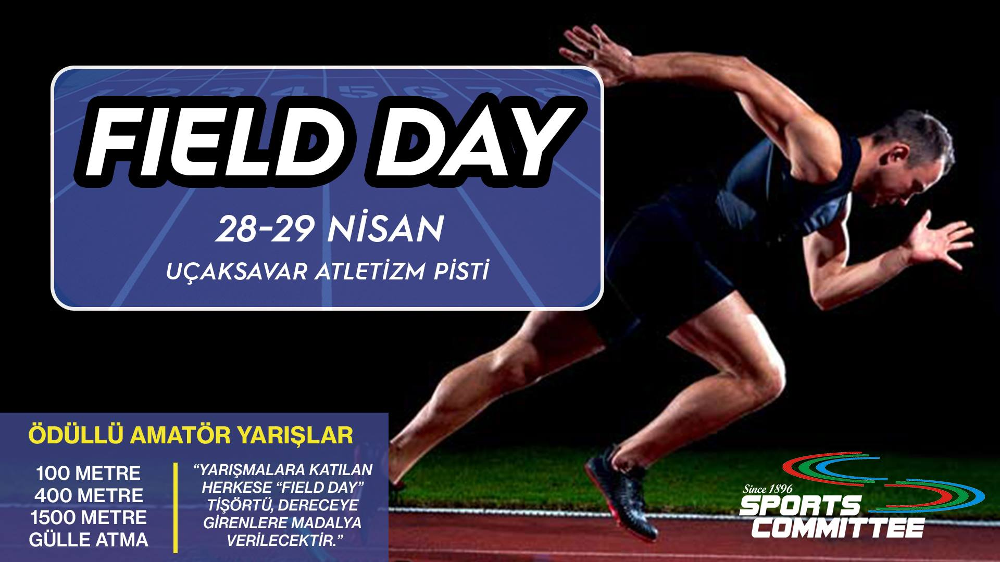
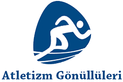

İlk kez 1898 yılında düzenlenen geleneksel Field Day Atletizm Günleri, bu yıl 28-29 Nisan'da Boğaziçi Üniversitesi Uçaksavar Kampüsü'nde düzenlenecek.
Türkiye’nin dört bir yanındaki üniversitelerden çok sayıda sporcunun katılımıyla koşu yarışları, gülle atma, uzun atlama, yüksek atlama ve cirit atma gibi atletizm branşlarında profesyonel yarışlar düzenlenecek.
Ayrıca amatör sporculara özel 100 metre, 400 metre, 1500 metre, gülle atma gibi branşlarda yarışlar düzenlenecek. Üstelik yarışlara katılan tüm sporculara tişört; dereceye giren tüm sporculara da madalya verilecek.

Daha önce duyurduğumuz üzere Atletizm Gönüllüleri'nin ilk toplantısını 29 Ekim'de 30'un üzerinde katılımcı ile BÜMED'de gerçekleştirdik. Zaman ayırıp katılabilen herkese çok teşekkür ediyoruz. Katılamayan arkadaşlarımızı da bir sonraki buluşmamızda mutlaka aramızda görmeyi diliyoruz.
Bildiğiniz gibi bir vakıf planıyla yola çıkmıştık ancak avukatımız sevgili Hakan Dal'ın vakıf kurmanın uzun sürebilen bürokratik bir süreç olduğu, faaliyetlerde ağır denetim prosedürleri yüzünden sıkıntılar yaşanabileceği önerisini dikkate alarak girişimimizin dernek yapılanması altında olmasına çekirdek kurucu grup sıfatıyla karar verdik. Bu sürecin vakıf kurulmasına göre daha hızlı bir şekilde tamamlanacağı bilgisini de aldık. Bir tüzük taslağı hazırlayarak avukatımıza ilettik. Bundan sonraki aşamaları ve gelişmeleri de sizlerle paylaşmaya devam edeceğiz.